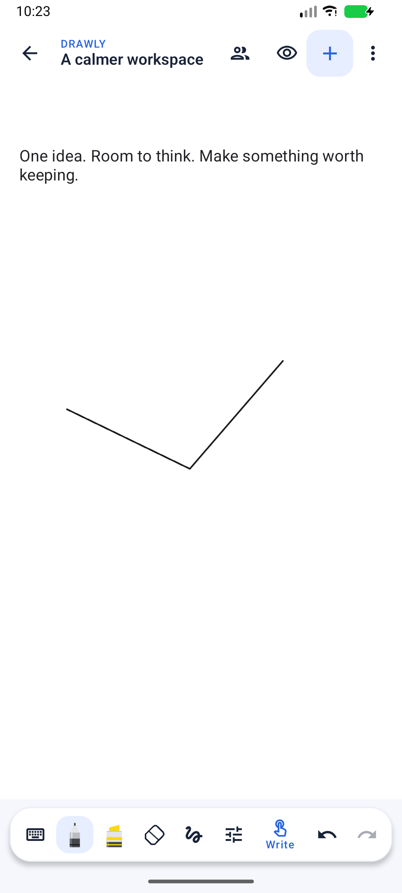
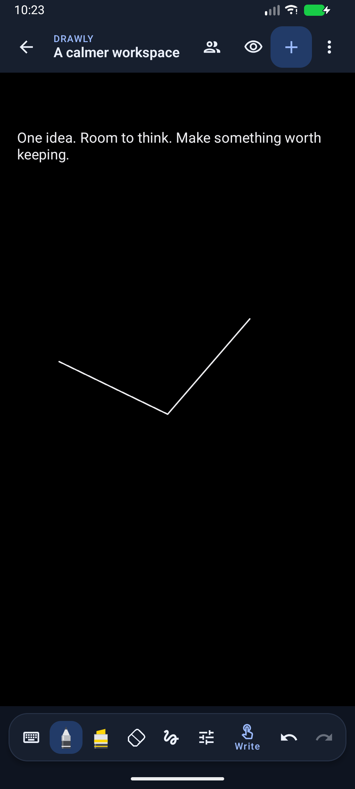
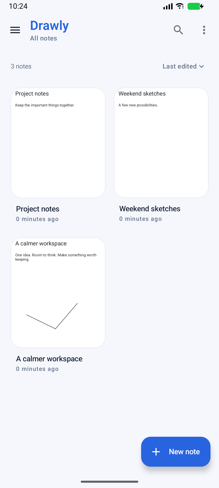
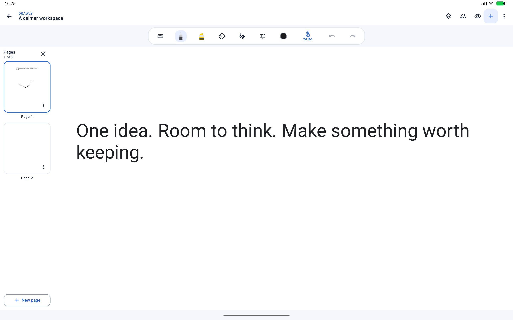

Drawly now uses its own blue visual identity, compact tools and a simpler library. Existing note data, ink styles, page gestures, exports and collaboration remain available.
Previously, adapting ink to dark mode created new stroke objects. Adding another stroke recreated those display copies for the whole page, discarding their cached curves. The canvas now applies display colours when drawing the original stroke, retaining its geometry across new strokes and theme changes. Filled pen previews also avoid calculating an unused smoothed centreline before calculating their filled envelope.
The library reuses a themed thumbnail while its source document is unchanged. A document save invalidates that preview. This avoids decoding and drawing the note again when a card scrolls back into view.




All 86 tests passed: 26 JVM tests and 60 Android tests, including the three local TLS/WebSocket collaboration tests. The new regressions verify original geometry-cache reuse on a 160-stroke page, thumbnail reuse and invalidation after saving, and access to the tool palette with the explicit writing-mode control. Existing checks cover writing in both themes, pressure/palm input, rotation, page creation, zoom cancellation, persistence, text, exports and images. Lint completed with 0 errors and 67 warnings. Both APK signatures verified. Logs: build-modern-final.log and build-modern-all-tests.log.
Preview update: C:\Users\vardh\AndroidStudioProjects\Notepad\app\build\outputs\apk\device-preview\notes-preview.apk
Standard package: C:\Users\vardh\AndroidStudioProjects\Notepad\app\build\outputs\apk\debug\app-debug.apk
Icon: C:\Users\vardh\AndroidStudioProjects\Notepad\branding\drawly-icon-1024.png. The built-in imagegen prompt and PNG variants are included in branding/drawly-icon-assets.zip.